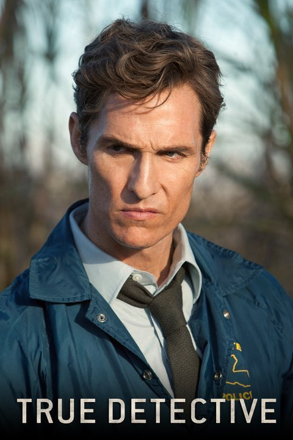

True Detective (Aired 2014-)
Rating: 9.2/10
Age Restriction: TV-MA
An anthology series in which police investigations unearth the personal and professional secrets of those involved, both within and outside the law.
Creator: Nic Pizzolatto
Cast
Matthew McConaughey as .... Detective Rust Cohle
Colin Farrell as .... Detective Ray Velcoro
Woody Harrelson as .... Detective Marty Hart
Rachel McAdams as .... Detective Ani Bezzerides
Michelle Monaghan as .... Maggie Hart
Taylor Kitsch as .... Officer Paul Woodrugh
Michael Potts as .... Detective Maynard Gilbough